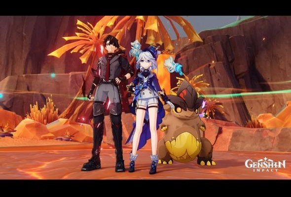
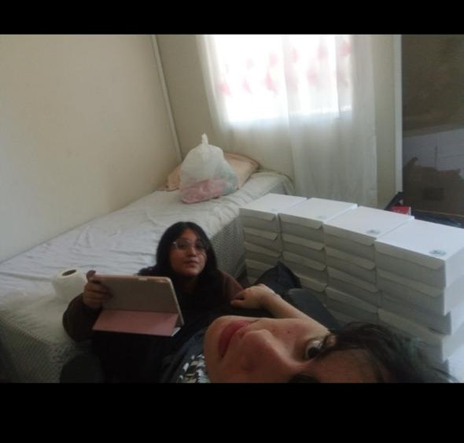
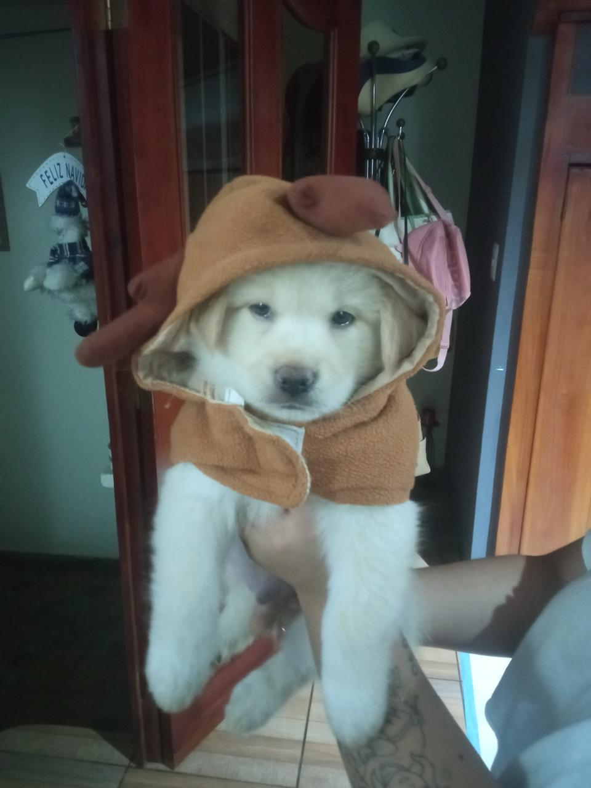
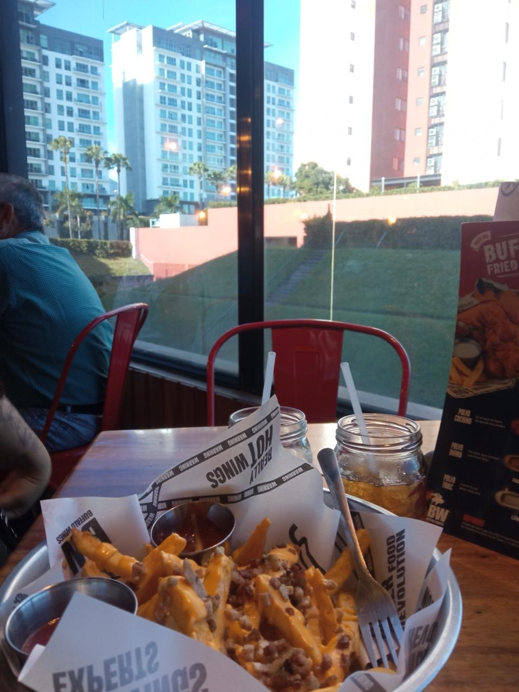
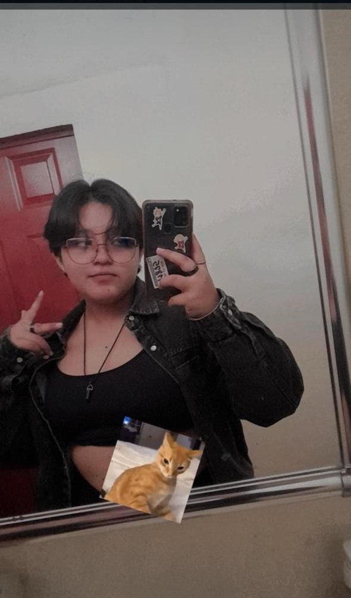
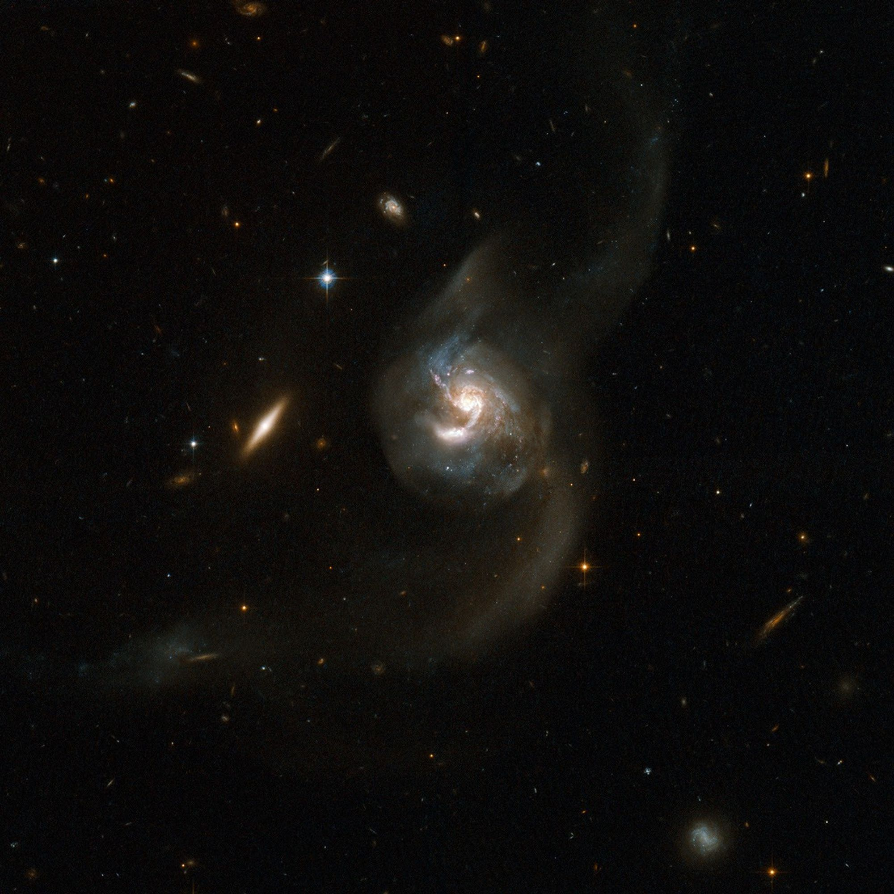
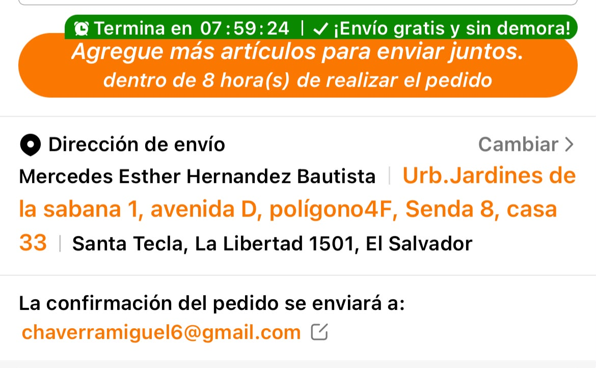

⭐ Nuestros recuerdos ⭐

El inicio de un amor
Aunque genshin no es lo que era antes y tampoco nosotros, nuestras cuentas y lo que vivimos siguen ahi, sabias que contando natlan, yo ayude a que te completaras todas las regiones del juego disponibles en su momento excepto monstadt? (Yo ya las habia completado previamente todas, pero lo volvia a hacer solo por acompañarte y poder pasar tiempo contigo <3)

El primer día
luego de nuestra primera noche empezaron oficialmente nuestras primeras 24 horas juntos, pasamos todo el dia pegando cajas, no fue nuestra cita mas romantica, pero definitivamente entendi que sin importar el que estuvieramos haciendo, mientras estuviera contigo, yo era el hombre mas feliz del mundo

El niño
siempre dicen que para el primer hijo nunca se esta preparado, y para este definitivamente no lo estabamos, pero, aunque me dieran celos cuando lo besabas y me ignoraras a mi todo el dia, me hizo darme cuenta de que si yo tuviera hijos, no habria otra mujer en el mundo que quisiera que fuese su madre

El barril sin fondo
Sabias que desde que llegue a colombia y volvi a entrenar decidi apegarme mas a la dieta para salirte mas barato cuando me quieras invitar? Lo siento, prometo dejar de ser tan tragon y tambien un mejor cocinero para la proxima que te vea preciosa

Sin importar el tiempo
sabias que conservo fotos de ti tan antiguas que probablemente ni te acuerdes de ellas? Realmente no cumplen ningun proposito sobre todo con lo tanto que has cambiado, pero son un eterno recordatorio de que desde que eras una niña, hasta que te convertiste en una mujer y finalmente en mi esposa, fueron varias etapas y siempre te ame y te segui amando en cada una de ellas

Señales
esto no es tanto un recuerdo, es mas una curiosidad que nunca te dije y parte de algo mas grande que planeo a futuro (secreto) pero, sabias que la ultima foto de la nasa tanto en tu cumpleaños como el mio son dos galaxias colisionando? Que mas pruebas quieres mujer, cuando dos galaxias colisionan, se unen para siempre <3
🎵 Canciones para ti 🎵
Hay cosas que no siempre sé cómo decirte, así que a veces prefiero dejar que una canción hable por mí. ❤️
You Are My Destiny
Paul Anka
Sabes que no creo en el destino, pero sigo creyendo que mi futuro contigo, es algo más que una cuestión de suerte o coincidencias.
🎧 Escuchar canciónMy Way of Life
Frank Sinatra
No sé amar a una mujer que no seas tú, no conozco ningún camino, que no me lleve de vuelta a ti, para mí, solo existes.
🎧 Escuchar canciónThis I Love
Guns N' Roses
Una carta del pasado hecha para que yo te la diera en el futuro.
🎧 Escuchar canciónTightrope
LP
Recuerdo habértela dedicado antes, fue en un contexto y situación parecidas y esa es la razón por la que está aquí, además que jamás olvidaré que la primera canción que me dedicaste, fue de LP, I'm Only Good With You.
🎧 Escuchar canciónSerendipity
Jimin (BTS)
Sé que esta no la canta tu otro novio, y quizás no sea la mejor opción para ti, pero creo que es una forma de hablarte en tu idioma y recalcar lo que dije en la primera canción, esto es más que suerte, coincidencias, es algo que va mucho más lejos.
🎧 Escuchar canciónUn Millón de Primaveras
Vicente Fernández
Recuerdo que una vez, me dijiste que si rompíamos o atravesábamos un mal momento y te dedicaba esta canción, volverías y me besarías lo más fuerte que pudieras. No sé si te acuerdes, o incluso si lo decías en serio, pero ahora mismo ruego que así sea.
Escuchar canción 🎵If I Ain't Got You
Alicia Keys
Sabes muy bien que es verdad que en este mundo no me importa nada si tú no estás ahí para verlo o compartirlo conmigo.
Escuchar canción 🎵Whatever Happens
Michael Jackson
Aunque el mundo se acabe, no te rindas, aférrate, porque incluso si todo se derrumba, yo siempre estaré ahí para tomar tu mano, pase lo que pase.
Escuchar canción 🎵🎵 I Want You Back — NSYNC 🎵
La única canción que pude encontrar que describe tal cual cómo me siento y lo que quisiera decirte cada día, pero ntp, prometo que tenga lo que tenga que hacer, te conseguiré de vuelta <3
🎧 Escuchar canción💌 LO QUE NO TE PUEDO DECIR 💌
Sé que hay muchas cosas en tu mente. Sé que quizás esto que estamos
viviendo es emocionalmente desgastante, o incluso que simplemente
estás ocupada.
Aquí te dejaré cartas, confesiones y cosas que creo que deberías saber.
Pero es sin compromiso.
No tienes que enfrentarte a todas estas cartas de una vez. Puedes abrir
una hoy, otra mañana, dentro de una semana o cuando simplemente sientas
que quieres hacerlo. Puedes leerlas todas de principio a fin, leer
solamente una, o incluso dejarlas para otro momento.
No hay ninguna prisa.
Y, sobre todo, no quiero que sientas que por leerlas tienes que
responderme. No tienes que hacerlo. Puedes leerlas y
quedarte con ellas para ti, si eso es lo que necesitas o lo que quieres.
No quiero presionarte. Solo creo que es importante que sepas esto y que
puedas conocer todo aquello que llevo dentro, pero
a tu ritmo, a tu tiempo y de la manera que tú quieras, mi corazón.
❤️
Una disculpa
Mi persona favorita
¿Quién soy?
🎁 Un regalito para ti
TE TENGO UN NUEVO REGALO...
